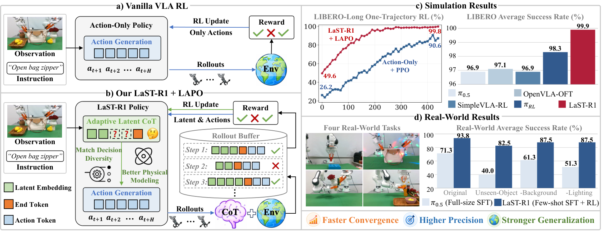
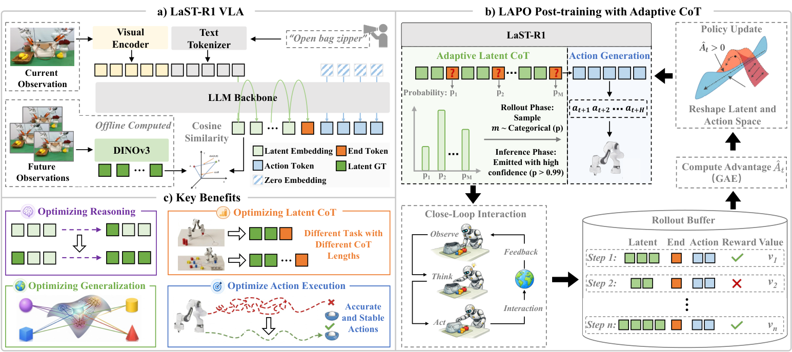
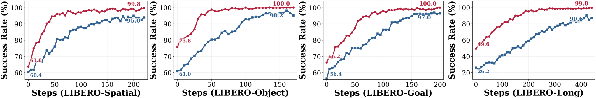
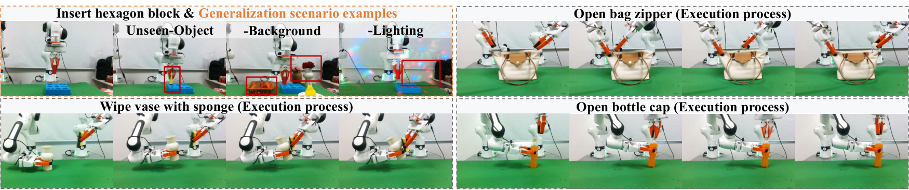
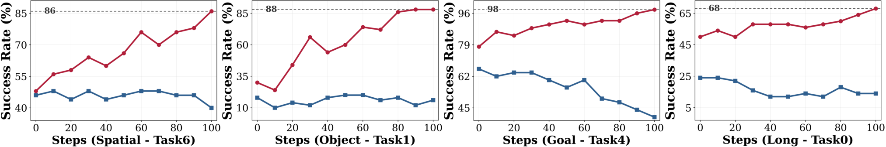
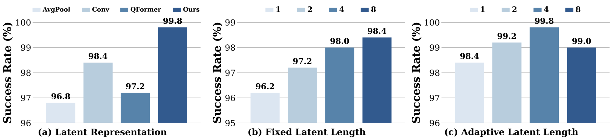
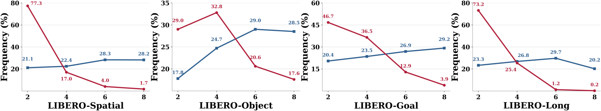
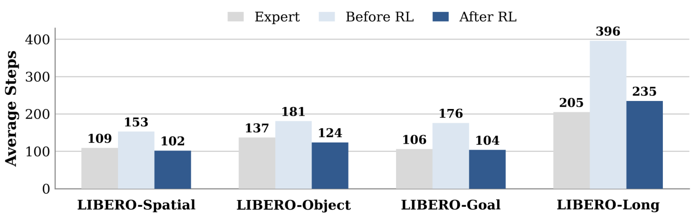
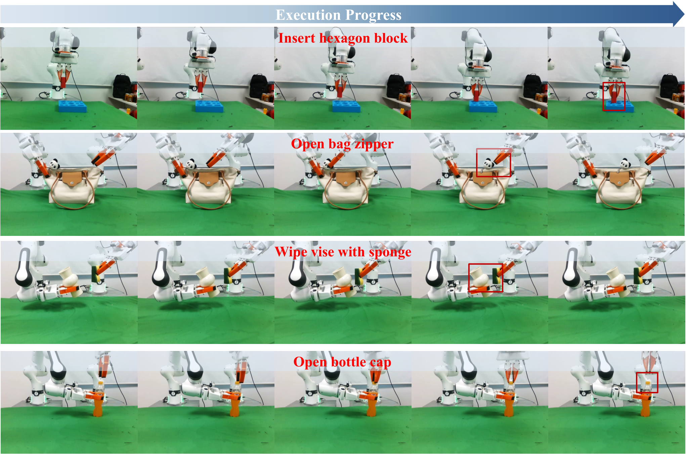

§030 秒速覽
四個關鍵數字，抓住全文骨架
<latent_end> 早退機制，讓「想多久」本身也變成 RL 學出來的決策。
§1問題：VLA 的「思考」卡在哪
文字 CoT 太慢、latent 推理不會互動、action-only RL 不會思考
VLA（Vision-Language-Action）模型這兩年學會了「先推理再行動」，但論文把三條既有路線的失敗模式排得很清楚：
| 路線 | 代表方法 | 失敗模式（論文說法） |
|---|---|---|
| 顯式 CoT（文字／未來影像） | ECoT、CoT-VLA、OneTwoVLA 等 | 解碼中間文字或影像帶來不可忽略的推理延遲＋離散化瓶頸——抓不住連續、高頻的物理動態 |
| 潛在推理 VLA | 近期 latent-reasoning 工作 | 推理搬進緊湊潛空間、能容納難以語言化的物理知識，但全數困在模仿學習：吃大量專家示範、無閉環互動、compounding error、泛化受限 |
| VLA 的 RL 後訓練 | GRAPE（DPO）、VLA-RL／πRL（PPO）、SimpleVLA-RL／TGRPO／RLinf（GRPO） | 只支援 vanilla 架構、只在動作空間做監督——「想」和「做」之間的內在連結完全沒被優化 |
缺口因此很具體：怎麼對「先潛在推理、再生成動作」的策略做 RL 後訓練？難點在於 latent token 是連續向量，沒有離散機率可以算 PPO 的 likelihood ratio——獎勵訊號進不了思考空間。LaST-R1 的答案是一套專為此設計的演算法：Latent-to-Action Policy Optimization（LAPO）。
§2方法：讓獎勵同時雕塑「思考」與「動作」
LaST-R1 VLA 架構 + LAPO 演算法 + 自適應推理長度

架構：Qwen3-VL-4B 底座 + DINOv3 認知錨
LaST-R1 VLA 以 Qwen3-VL-4B（SigLIP2-Large 視覺編碼器 + LLM backbone）為底座。推理時模型先自迴歸生成 Nz 個 latent 推理 embedding（模擬對未來狀態的推演），吐出 <latent_end> 後切換到平行解碼：8 步動作 chunk（56 個離散 action token，256 檔離散化）靠雙向注意力一次 forward 全部解出，並重用 latent 階段的 KV cache。<latent_end> 的最終 hidden state 另接一個 4 層 MLP value head 估狀態價值，供 RL 使用。
latent 的監督目標是全篇最務實的一手：抽 DINOv3 的 <CLS> token（4096 維），沿通道取 magnitude top-k（k=2560）對齊 VLA 隱藏維度——不用 pooling 抹平空間結構、不用 Q-Former 從頭學查詢，直接借用視覺基礎模型結構豐富、語義緻密的特徵空間當「認知錨」。而且全部離線預計算，訓練與推理零額外開銷。

<latent_end> 動態調整推理長度；(c) 訓練後不同任務自動長出不同推理深度。LAPO：連續 latent 怎麼算 PPO ratio
離散 action token 的 ratio 好辦（聯合 log-prob 相減取 exp）；連續 latent 沒有機率。LAPO 的解法：把 rollout 時的舊 latent 視為從「以新策略輸出為中心的等向高斯」取樣而來。舊策略對自己取樣點的密度只剩正規化常數，一相除常數對消，latent ratio 化簡成一個乾淨的距離函數：r_z = exp(−Σ‖z_old − z_θ‖² / 2σ²)。把 ra、rz 各自套 PPO clipped surrogate 後相加，advantage 為正時，優化等於把新策略的 latent 拉向「成功軌跡當時的推理」流形。總損失 L = L_action + λ1·L_latent + λ2·L_value + λ3·L_end（λ1=0.1、λ2=1、λ3=0.1）。
自適應推理長度：把「想多久」也變成決策
固定長度推理對簡單動作浪費算力、對複雜操作又不夠想。LaST-R1 把 <latent_end> 從固定終止符改成可學習的動態轉換訊號：rollout 時從 M 個候選位置的 logits（溫度 β 軟化）抽樣推理長度做探索；更新時對該 token 額外算一條離散 ratio（Lend），由 advantage 引導——可預測的狀態獎勵早退，難的操作懲罰想太少。推理部署時改用信心閾值 p≥0.99 早退。
§3實驗設定：LIBERO 四套件 + 真實四任務
先 400K 軌跡預訓練，再走「少量 SFT warm-up → 線上 RL」兩段式
預訓練：自建 400K 軌跡／28M 幀混合語料（Open-X-Embodiment、DROID、RoboMIND；BridgeV2 20.8%、Kuka 20.2%、Fractal 13.7% 為前三大來源），DINOv3 latent 目標全數離線預計算。
模擬（LIBERO）：Spatial／Object／Goal／Long 四套件各 10 任務，模擬 Franka Panda，單一前視 256×256。兩段式訓練：每任務隨機取 1 條示範做 SFT warm-up（8×H20，10K 迭代），再進模擬器線上 RL——verl + Ray + FSDP，每輪 rollout 512 條軌跡、切 4 個 mini-batch 跑 4 個 PPO epoch；稀疏二元獎勵於終點放大 5 倍；GAE（γ=0.99、λ=0.95）、非對稱 clip（0.2／0.28）、取樣溫度 1.6。指標為每任務 50 個 held-out 場景的平均成功率（SR）。
真實世界：兩支 Franka Research 3 + 3D 列印 UMI 夾爪；RealSense D455 第三人稱 + 兩支 D435 腕視角；RTX 4090 上推理。四個任務——插六角積木（單臂）、拉開袋子拉鏈、海綿擦花瓶、旋開瓶蓋（皆雙臂）。每任務 30 條 SpaceMouse 示範 warm-up，之後走非同步 actor-learner 的人在迴路線上 RL：凍結底座只更新 LoRA（r=32），人工介入軌跡進專用 buffer，成功由操作員確認（+10 終點獎勵、每步 −0.05）。評估每格 20 次 rollout、人工判定成敗。
| 基線 | 範式 | 測試什麼假設 |
|---|---|---|
| OpenVLA、GR00T-N1、π0、π0.5、OpenVLA-OFT | SFT（每任務全量 50 條示範） | 吃滿專家資料的模仿學習天花板在哪 |
| GRAPE、TGRPO、VLA-RL | RL（全軌跡 warm-up †） | 偏好對齊／群組相對優化能否補上互動能力 |
| SimpleVLA-RL、RLinf-GRPO | RL（單軌跡 warm-up） | 與 LaST-R1 同資料條件下的 GRPO 路線 |
| πRL | RL（單軌跡，但用雙相機視角 ‡） | PPO 路線的最強代表——注意其輸入比 LaST-R1 多一路相機 |
真實世界的對照組是 π0.5 用 100 條專家示範做全量 SFT——3.3 倍於 LaST-R1 的示範量，但沒有線上互動。
§4主結果：一條示範 warm-up，四套件全數第一
LIBERO 12 方法對決 + 真實四任務含泛化壓力測試；綠字 = 該欄第一（並列含）
| 方法 | 範式 | Spatial | Object | Goal | Long | 平均 SR |
|---|---|---|---|---|---|---|
| OpenVLA | SFT | 84.7 | 88.4 | 79.2 | 53.7 | 76.5 |
| GR00T-N1 | SFT | 94.4 | 97.6 | 93.0 | 90.6 | 93.9 |
| π0 | SFT | 96.8 | 98.8 | 95.8 | 85.2 | 94.2 |
| π0.5 | SFT | 98.8 | 98.2 | 98.0 | 92.4 | 96.9 |
| OpenVLA-OFT | SFT | 97.6 | 98.4 | 97.9 | 94.5 | 97.1 |
| GRAPE† | RL·DPO | 88.5 | 92.1 | 83.1 | 57.2 | 80.2 |
| TGRPO† | RL·GRPO | 90.4 | 92.2 | 81.0 | 59.2 | 80.7 |
| VLA-RL† | RL·PPO | 90.2 | 91.8 | 82.2 | 59.8 | 81.0 |
| SimpleVLA-RL | RL·GRPO | 98.2 | 98.7 | 98.8 | 91.7 | 96.9 |
| RLinf-GRPO | RL·GRPO | 98.9 | 99.7 | 98.3 | 93.6 | 97.6 |
| πRL‡ | RL·PPO | 99.6 | 100.0 | 99.6 | 94.0 | 98.3 |
| LaST-R1 | RL·LAPO | 99.8 | 100.0 | 100.0 | 99.8 | 99.9 |
† = 全軌跡 warm-up；‡ = 雙相機視角訓練。LaST-R1 為單軌跡 warm-up、單視角（論文 Table 1）。
兩個讀點：（1）一條示範的 RL 打贏吃滿 50 條的 SFT——π0.5 96.9、OpenVLA-OFT 97.1 都被越過；（2）差距集中在最需要「想」的 LIBERO-Long 長程任務：99.8 vs πRL 的 94.0。學習曲線（原圖 3）顯示同樣的故事：Action-Only + PPO 在 Long 上收斂又慢又低，latent CoT 像一層「認知緩衝」把 RL 的優化地形抹平了。

真實世界：52.5% → 93.75%，順帶把泛化也修了
| 任務 | π0.5（100 條全量 SFT） | LaST-R1（30 條 SFT→RL） | Unseen 物體（π0.5 / LaST-R1） | 換背景 | 換光照 |
|---|---|---|---|---|---|
| 插六角積木（單臂） | 65 | 45 → 90 | 35 (−30%) / 75 (−15%) | 55 / 85 | 40 / 80 |
| 拉開袋子拉鏈（雙臂） | 75 | 55 → 95 | 30 (−45%) / 80 (−15%) | 70 / 95 | 60 / 90 |
| 海綿擦花瓶（雙臂） | 75 | 65 → 95 | 45 (−30%) / 80 (−15%) | 65 / 90 | 50 / 95 |
| 旋開瓶蓋（雙臂） | 70 | 45 → 95 | 50 (−20%) / 95 (−0%) | 55 / 80 | 55 / 85 |
| 平均 | 71.25 ±4.5 | 52.5 → 93.75 ±1.25 | π0.5 最多 −45%；LaST-R1 ≤ −15% | 近零損 | 近零損 |
每格 20 次 rollout 的成功率（%）；std 取自三次獨立重跑（論文 Table 2）。括號為相對 Original 的掉幅。

值得注意的細節：warm-up 剛結束時 LaST-R1 只有 52.5%（明顯輸給 π0.5 的 71.25%）——是線上 RL 補回了 41 個百分點，並把瓶蓋這種需要建模「隨時間演化的物理接觸」的任務從 45% 拉到 95%。
泛化：held-out 任務上，action-only 躺平、LaST-R1 一路爬
模擬側的 OOD 協定：每套件 9 個任務做 RL、留 1 個從不訓練。Action-Only + PPO 的 OOD 曲線早早躺平甚至倒退（Goal／Long 套件）；LaST-R1 + LAPO 持續上升——Long-Task4 上基線始終不過 20%，LaST-R1 爬到 54%；Spatial-Task0、Object-Task0、Goal-Task5 更收斂到 100%。

§5消融與負結果：推理深度是「被管制的自由」
除註明外皆在 LIBERO-Spatial 上評估
1 · latent 推理本身值多少：SFT 階段就先贏 12.9 個百分點
one-shot SFT warm-up 對決：帶 latent 推理 63.9% vs Action-Only 51.0%（四套件平均）；差距在 LIBERO-Long 最誇張——26.2% → 49.6%，接近翻倍。RL 後差距仍在：LaST-R1 + LAPO 99.9 vs Action-Only + PPO 95.2。
2 · latent 表徵怎麼做：免訓練的 DINOv3 贏過所有可學習壓縮器
RL 後對比四種構造：DINOv3 <CLS> top-k 99.8% > 卷積下採樣 98.4% > Q-Former 97.2% > 全域池化 96.8%。加參數學壓縮反而輸給直接借基礎模型的先驗——池化抹掉空間細節、Q-Former 從頭學查詢引入雜訊偏置。
3 · 想多久：1→8 token 單調上升，但 4→8 已見邊際遞減
固定長度掃描：無推理 95.0% → 1 token 96.2% → 8 tokens 98.4%，單調上升但 4→8 增益有限，故上限鎖 8。
4 · 早退點設幾個：M=4 最好，全開反而掉
Nmax=8 之下掃描候選早退位置數 M∈{1,2,4,8}：M=4 最佳（99.8%），優於固定長度（98.4%）；但 M=8（每個 token 後都能退）反而降到 99.0%。

<latent_end> 發射策略（M 個候選位置）。<latent_end> 懲罰 λ3 加重到 2，掉到 98.6——過度懲罰打斷長度探索。另一個該記的坦白：主表全體已擠在 99+ 的天花板下，消融差距多在 1–3 個百分點內，而論文沒有報告模擬消融的標準差——這些排序的統計強度，讀者只能自行打折。
RL 學會的「想多久」長什麼樣
warm-up 階段推理長度是隨機抽的，分佈近乎均勻；LAPO 之後分佈劇烈塌縮——四個套件全數以 2 或 4 token 為主，模型學會「狀態表徵夠了就停」的 early-exit，在不犧牲成功率的前提下大砍每步 token 數。

還有一個超出預期的副產品：RL 後的執行步數在 Spatial／Object／Goal 三套件比專家示範還少（500 條測試軌跡、不分成敗全計）。SFT 後的策略遇到 OOD 狀態會陷入無效繞圈逼近步數上限；RL 後的策略反而找到比腳本專家更直接的路徑。

§6限制：論文自己認的，和沒認的
附錄 H 列了兩條；我們再補四條
論文自列（附錄 H）：
- 推理長度仍是手工框架。上限 Nmax=8、早退只能發生在人為預設的 M 個候選位置——「自適應」是在被設計好的選項裡選，不是完全動態的推理架構。
- 只驗證了單臂／雙臂平台。靈巧手、人形全身控制還沒碰。
失敗案例（附錄 G）也值得原樣記：模擬側，碗放偏滑出盤沿、手臂路過碰倒摩卡壺（不可逆、直接翻車）；真實側，插塊差之毫釐、拉鏈因動態摩擦打滑脫手、海綿根本沒碰到花瓶表面、瓶蓋轉一半提前收工——清一色是細粒度接觸物理，也就是「潛在推理」最該罩住的地方。

論文沒列、讀者該自己補的：
- 「1 條示範」的資料效率是用互動量換的。LIBERO 上每輪 RL 迭代要收 512 條模擬 rollout；真實世界要人守在旁邊確認成功、隨時介入。示範省了，環境互動與人力沒省——對無法大量重置的場景，這筆帳不成立。
- 真實實驗沒有 RL 對 RL 的比較。22.5 個百分點的標題數字是「30 條示範＋線上 RL」對「100 條示範純 SFT」——混合了「RL 後訓練有用」與「LAPO 比別的 RL 好」兩件事；後者在真實世界並未被單獨驗證。且每格僅 20 次 rollout，粒度 5%。
- LIBERO 已被打穿。99.9% 之後這個基準對後續方法幾乎沒有鑑別度；前四名擠在 97.6–99.9 之間，主戰場的訊號本身在飽和。
- 認知錨綁死在凍結的 DINOv3 上。latent 目標離線預計算意味著推理空間的先驗完全由 DINOv3 的訓練分佈決定——遇到遠離其分佈的視覺域（熱像、煙霧、強反光液面），錨本身會偏，而框架沒有校正機制。
§7對煎蛋機器人感知任務的啟示
讀後解析——這部分是本站觀點，不是原文內容
LaST-R1 是「潛在推理 VLA」的 RL 補完計畫：架構上把 CoT 從離散文字換成 DINOv3 錨定的連續 latent（高頻物理動態不必先翻譯成語言），演算法上用一個高斯替身讓連續思考也能算 PPO ratio、獎勵同時塑形「想」與「做」，再讓模型自己學會「想多久」。對我們這種固定相機 RGBT、數十段影片、沒有模擬器的煮食感知任務，可直接搬的是表徵構造與「自適應推理深度」的思想；不可搬的是 LAPO 本體——它吃的互動量（每輪 512 條 rollout／人在迴路確認）在鍋邊不存在。
- latent 推理 vs 文字 CoT，煎蛋站在 latent 這邊。蛋的熟度是連續、難以語言化的物理狀態——蛋白混濁度的漸變、氣泡節奏、邊緣捲曲程度，硬轉成「蛋白已半凝固」這類離散文字必然丟資訊、加延遲（正是論文對顯式 CoT 的兩條指控）。熟度估計器若要「推理」，該學 LaST-R1 在緊湊潛空間做：輸出決策前先過幾個以視覺基礎模型特徵為錨的 latent step。
- DINOv3 <CLS> top-k 離線預計算，是 35 段影片體制下零成本可抄的一手。消融說得很白：免訓練的基礎模型先驗（99.8）打贏所有從頭學的壓縮器（卷積 98.4、Q-Former 97.2、池化 96.8）——資料越少，越不該自己學表徵。落地版：全部影格離線抽 DINOv3 embedding 當熟度模型的輔助監督目標（auxiliary latent target），推理零開銷。但注意 §6 最後一條：RGBT 的熱像通道不在 DINOv3 分佈內——RGB 路錨 DINOv3，T 路得走自己的支路或自監督。
- 「自適應推理深度」正是煮食 FSM gating 該有的形狀。LaST-R1 學到的分佈（原圖 7）說：多數決策 2–4 token 的反射就夠，只有難的操作值得想滿 8。翻譯到熟度 FSM：平原期（蛋已下鍋、狀態緩變——自家已知的難例段）每幀走廉價反射路徑即可；相變窗口（邊緣開始泛白、翻面後十餘秒、起鍋倒數）才升級到深審議——多幀聚合、跨模態互驗、或叫大模型看一眼。LaST-R1 的觸發機制可以整套對映：信心 p≥0.99 → 走反射；後驗變平 → escalate。而 M=4 的負結果給了一條反直覺的工程紀律：escalation 檢查點不要每幀都設——固定在少數幾個決策點（如 FSM 狀態邊界前後）反而比「隨時可升級」穩。
- LIBERO 99.9% 的飽和，恰恰是對濕滑形變場景的警告。LIBERO 是剛體、可重置、模擬器內的世界；而論文自己的真實失敗案例（原圖 9）全發生在動態摩擦、形變、接觸——拉鏈打滑、海綿沒碰到面，正是食物操作的日常。蛋更狠：不可逆、不可重置，煎壞了沒有 reset 鍵，online RL 的 512 rollouts／迭代在鍋邊是天方夜譚。所以 tens-of-videos 體制的正解是借它的架構（latent reasoning head＋基礎模型錨定＋早退 gating），把它的訓練迴圈換成離線監督或事後人工標註的 doneness 對錯。
- 一個可以直接抄的評估設計：論文用「執行步數 vs 專家」（原圖 8）證明 RL 後的策略比示範更果斷。感知側的對應指標是熟度判定延遲——從真實相變發生到 FSM 實際轉移隔了幾幀。這比整段準確率更能暴露兩種真實風險：平原期猶豫（該轉不轉）與誤觸發（沒相變亂轉），也正是 wok masking + FSM gating 架構最該量化的兩個失效模式。